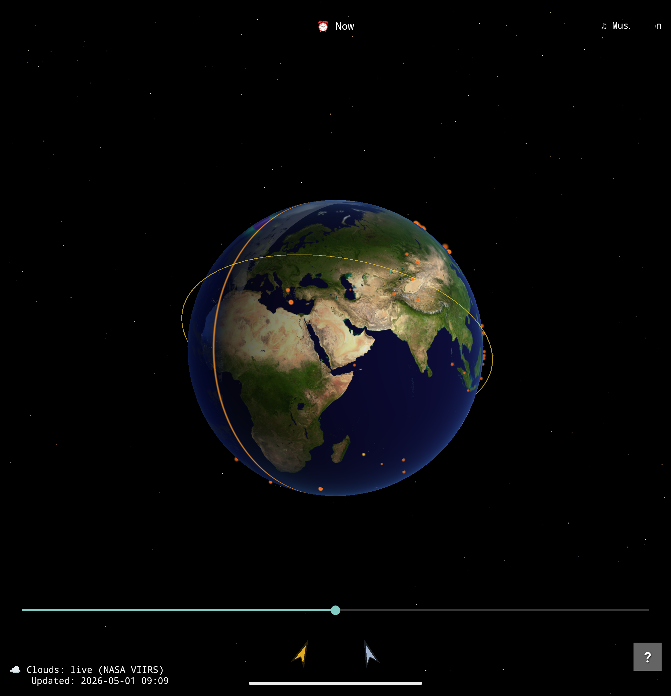
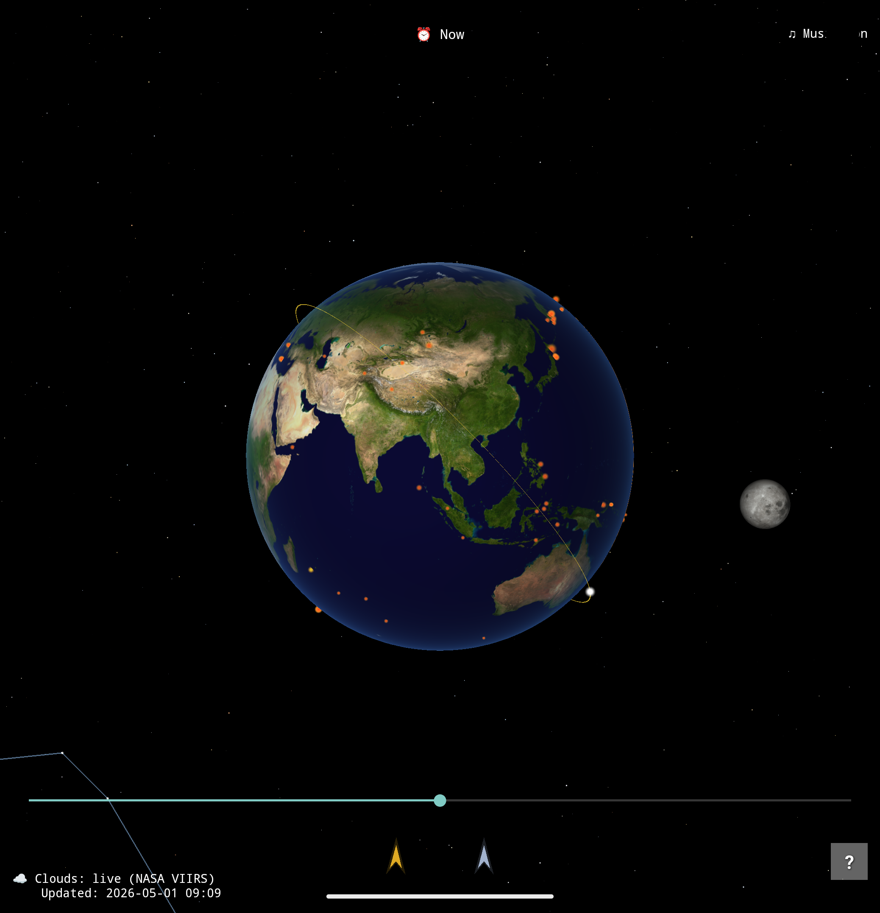
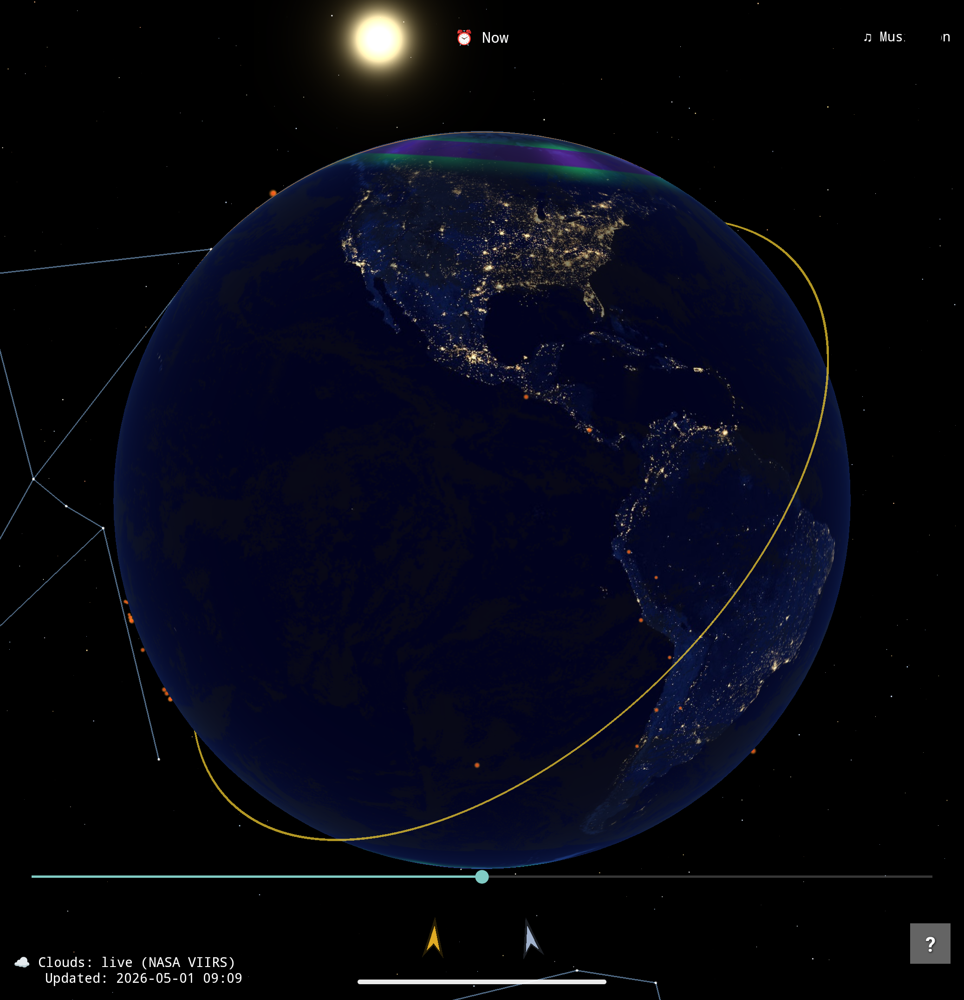

Pale Blue Dot

About The App
Pale Blue Dot is a stunning, real-time 3D Earth viewer for Android, built entirely from scratch with raw OpenGL ES 3.0 and Kotlin—no game engines or third-party rendering libraries. It simulates our planet and the surrounding cosmos with remarkable astronomical accuracy, featuring real-time positioning for the Sun, Moon, and the International Space Station (ISS).
Stay connected to the planet's pulse through seamless integrations with live, public APIs. Watch live cloud cover updates directly from NASA's Terra and Aqua satellites, and track recent USGS earthquakes and NASA EONET volcanic eruptions—all overlaid beautifully onto a fully interactive globe that features day/night cycles, aurora zones, and 16,000 procedurally generated stars.
Features
- Live Earth Data: Real-time VIIRS cloud covers updated every 6 hours, plus live markers for recent M4.5+ earthquakes and active volcanic eruptions.
- Precise Astronomy: Accurate Julian Date calculations drive the real-time position of the Sun, Moon, and ISS, complete with geometric solar and lunar eclipse detection.
- Custom OpenGL 3D Engine: Smooth, hardware-accelerated rendering featuring Lambertian lighting, Fresnel atmospheric rim glow, city lights at night, and dynamic auroras.
- Rich Cosmic Skybox: Explore a beautifully rendered sky filled with 16,000 twinkling stars (sized by power-law and colored by spectral class) and 15 major constellations using real J2000 RA/Dec positions.
- Interactive Time Scrubber: Offset the current time ±24 hours to watch the terminator line sweep across the globe or predict the ISS's orbital path.
Gallery




Join the Internal Test Track
Pale Blue Dot is currently in internal testing. To get early access, please follow these steps in order:
- First, join the Google Group for Testers to get authorized.
- Once joined, opt-in via the Web Link.
- Finally, download the app from the Google Play Store.